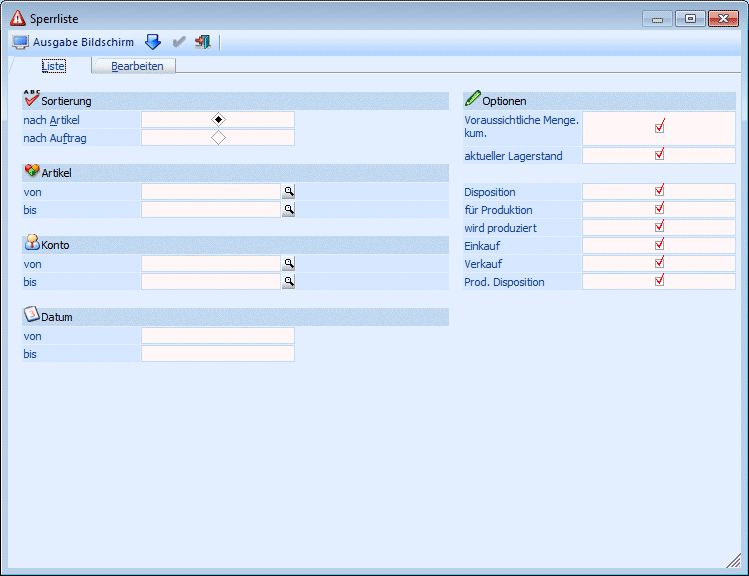
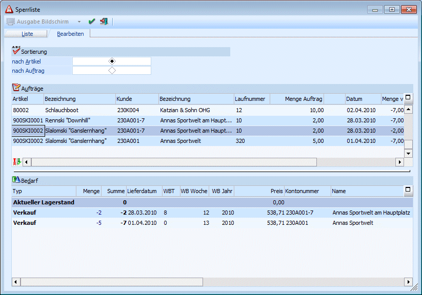

Im Menüpunkt…
1 WinLine FAKT
1 Erfassen
1 Kundenbestellungen
1 Sperrliste
… gibt es die Möglichkeit, für Artikel, die laut System nicht geliefert werden können, Liefermengen und Liefertermine zu ändern bzw. eine Liste aller nicht lieferbaren Artikel auszudrucken.
Im Register "Liste" kann eine Liste der nicht lieferbaren Artikel, selektiert nach verschiedenen Kriterien, ausgegeben werden.

Ø Sortierung
Die Sperrliste kann sortiert nach Artikel oder nach Auftrag ausgegeben werden
Ø Artikel
Eingrenzung der auszuwertenden Artikel
Wird im Feld Artikel von - bis z.B. nur eine Artikelnummer eingegeben und dieser Artikel hat auch noch Ausprägungen, so werden alle Ausprägungen automatisch mit angedruckt. Nur wenn während des Anklicken des "Ausgabe-Buttons" die STRG-Taste gedrückt wird, wird nur der Hauptartikel alleine ausgewertet.
Ø Konto
Einschränkung der Zeilen auf einen bestimmten Personenkontenbereich
Ø Datum
Einschränkung auf das Lieferdatum
Ø Optionen
Die Checkboxen die bei den einzelnen Optionen gesetzt werden können betreffen die Anzeige des Artikelbedarfs im Register "Bearbeiten".

Eine Bearbeitung von Zeilen in der Sperrliste bewirkt eine Veränderung der korrespondierenden Belegzeilen (Aufträge). Diese veränderten Aufträge können danach noch einmal ausgedruckt werden, um den Kunden über geänderte Liefermengen und -termine zu informieren.
Beispiel
Ein Auftrag über den Artikel 20001 kann am 26.05. nicht ausgeführt werden. Menge verfügbar = -3.
In der Dispositionsliste ist ersichtlich, dass am 04.06. die notwendige Menge verfügbar sein wird. Summe=10.
Im nächsten Schritt wird daher das Datum vom 26.05. auf den 04.06. geändert.
Im Register "Bearbeiten" müssen die Änderungen mit OK (F5) gespeichert werden.
Danach ist der Auftrag mit der Laufnummer 3 (ebenfalls in der Bearbeitungszeile sichtbar) neuerlich auszudrucken.
Hinweis
Wenn Belege bei denen Belegzeilen gesperrt sind von einem Benutzer, der kein Administrator ist, im Register "Sperrliste bearbeiten" aufgerufen werden und das Lieferdatum geändert wird, wird diese Änderung nicht durchgeführt und eine entsprechende Meldung ausgegeben.
Am einfachsten geschieht das im Programmpunkt…
1 Erfassen
1 Belegdruck
… die durch das Bearbeiten der Sperrliste veränderten Belege können durch Wahl der Option "Nur veränderte Belege drucken", einfach gefiltert und im Stapel ausgedruckt werden.
Buttons
Ø  OK (nur verfügbar im Register
"Bearbeiten")
OK (nur verfügbar im Register
"Bearbeiten")
Durch Drücken dieses Buttons werden geänderte Zeilen gespeichert
Ø  Ende
Ende
Mit dem Ende-Button wird das Fenster geschlossen; nicht gespeicherte Zeilen werden dabei verworfen.
Ø  Ausgabe Bildschirm/Drucker (nur verfügbar
im Register "Liste")
Ausgabe Bildschirm/Drucker (nur verfügbar
im Register "Liste")
Über diese Buttons kann die Ausgabe der Liste auf Bildschirm oder Drucker erfolgen.